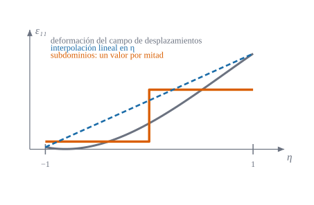

Reemplazar las deformaciones del campo por deformaciones propias: lineales o por escalones

Figura 27.1: Una deformación \(\varepsilon_{11}\) que varía a lo largo del elemento (gris), su interpolación lineal en \(\eta\) (azul discontinuo) y su aproximación por dos escalones (naranja), uno por subdominio, con el valor medio de cada mitad. Esquema ilustrativo con una función de prueba.
Qué se gana al dejar de calcular las deformaciones como derivadas del campo de desplazamientos y tratarlas como incógnitas con su propia interpolación
Objetivos y prerrequisitos
Objetivos. Al terminar el tema sabrás:
escribir la interpolación lineal de las deformaciones \(\varepsilon\), \(\kappa\) y \(\gamma\) de un elemento de cuatro nodos;
escribir la interpolación por subdominios (escalones) y calcular el valor de cada escalón como una media;
contar parámetros y decir por qué ambas interpolaciones evitan los modos espurios y el bloqueo;
reconocer la deformación por subdominios como una proyección de la del campo de desplazamientos;
comparar ventajas e inconvenientes de cada opción.
Prerrequisitos.E5 (bloqueo y espurios) y E4 (\(\mathbf H\)).
NotaExplicación para ingenieros: escalones frente a rampa
Para pintar un degradado en una pared, tienes dos opciones: pasar una rampa continua de un color a otro (interpolación lineal) o pintar dos franjas planas con el color medio de cada mitad (subdominios). La rampa se parece más a la realidad, pero las franjas son mucho más fáciles de calcular (cada integral es una constante por un área) y, lo importante, tienen la media correcta. En el elemento finito sucede igual: con el valor medio de cada subdominio se conserva lo esencial (el trabajo realizado) y se pierde sólo el detalle fino dentro de cada franja.
27.1 Por qué una interpolación propia
En el tema E4 la deformación salía del campo: \(\boldsymbol\varepsilon_u=\mathbf H_E\boldsymbol\delta\). Eso fuerza a que cada deformación tenga la forma que dicta la interpolación de los desplazamientos, incluida la parte parásita (el cortante de la Figura 25.1). Si en la energía se usa, en cambio, una deformación independiente\(\hat{\boldsymbol\varepsilon}\), con su propia interpolación, se puede elegir una que no contenga las partes parásitas. La condición de que ambos campos sigan siendo compatibles se impone de forma débil (promediada) mediante un principio mixto: el de Hu–Washizu (D8), tema E7.
27.2 Interpolación lineal
La opción más natural es una función lineal por dirección, con las dependencias que tiene el campo bilineal de desplazamientos:
Es decir: \(\varepsilon_{11}\) puede variar sólo a lo largo de \(\eta\) (la otra dirección del elemento) y \(\varepsilon_{22}\) sólo a lo largo de \(\xi\); la deformación de cizalladura \(\varepsilon_{12}\) se toma constante. Cada familia tiene cinco parámetros (extensión y flexión) o cuatro (cortante).
27.3 Interpolación por subdominios
Una alternativa es dividir el elemento en cuatro subdominios (cuadrantes, Figura 28.1) y tomar la deformación constante a trozos, con los mismos «grados de libertad»:
\[
\begin{aligned}
\varepsilon_{11}&=\begin{cases}\varepsilon_{11}^{A}&\text{en }A_{\mathrm I}+A_{\mathrm{II}}\ (\eta<0)\\\varepsilon_{11}^{B}&\text{en }A_{\mathrm{III}}+A_{\mathrm{IV}}\ (\eta>0)\end{cases}\qquad
\varepsilon_{22}=\begin{cases}\varepsilon_{22}^{C}&\text{en }A_{\mathrm I}+A_{\mathrm{IV}}\ (\xi<0)\\\varepsilon_{22}^{D}&\text{en }A_{\mathrm{II}}+A_{\mathrm{III}}\ (\xi>0)\end{cases}\\
\varepsilon_{12}&=\bar\varepsilon_{12}\ \text{(constante en todo el elemento)},
\end{aligned}
\tag{27.2}\]
y lo mismo para \(\kappa_{\alpha\beta}\) y \(\gamma_\alpha\). Los escalones de ecuación 27.2 son los valores medios de la rampa de ecuación 27.1 en cada mitad: cinco parámetros en extensión y flexión, cuatro en cortante: el mismo número que en la interpolación lineal. La gran diferencia es práctica: las integrales sobre cada subdominio son constantes por áreas, y la extensión a comportamiento no lineal es directa (cada subdominio puede tener su propio estado de material).
Ejemplo 27.1 (Ejemplo resuelto: los escalones de una deformación) Sea \(\varepsilon_{11}(\eta)=\eta+\eta^2\) en un elemento (\(\eta\in[-1,1]\)). La interpolación lineal que pasa por los extremos (\(\varepsilon(-1)=0\), \(\varepsilon(1)=2\)) es \(\bar\varepsilon+\bar{\bar\varepsilon}\eta=1+\eta\). Los dos escalones son las medias de cada mitad: \[
\varepsilon^A=\int_{-1}^0(\eta+\eta^2)\,d\eta=-\tfrac12+\tfrac13=-\tfrac16,\qquad
\varepsilon^B=\int_0^1(\eta+\eta^2)\,d\eta=\tfrac12+\tfrac13=\tfrac56 .
\] La energía \(\int\varepsilon^2d\eta\) vale: exacta, \(\tfrac{16}{15}=1{,}067\); lineal, \(\tfrac83=2{,}67\); escalones, \(\tfrac1{36}+\tfrac{25}{36}=0{,}72\). La interpolación lineal sobrestima la energía (ha tomado los valores de los extremos); la de escalones la subestima. Resultado analítico.
En el Ejemplo 27.1, ¿cuánto vale el escalón \(\varepsilon^B\) de la mitad \(\eta>0\)?
Es la media: \(\int_0^1(\eta+\eta^2)\,d\eta\) (la mitad tiene longitud 1).
Los escalones no son los valores en los extremos. Son medias: el escalón de la mitad \(\eta>0\) de \(\eta+\eta^2\) es \(5/6\), no \(2\).
Subdominio ≠ elemento. Los cuatro subdominios son sólo una partición para definir deformaciones; los desplazamientos siguen siendo bilineales sobre el elemento entero.
27.4 Contar parámetros
Una interpolación de deformaciones sólo es razonable si el número de parámetros independientes coincide con el número de modos de deformación del elemento (modos de \(\boldsymbol\delta\) que no son sólido rígido):
Familia
Modos del elemento
Parámetros de deformación
Extensión (membrana)
\(8-3=5\)
5
Flexión + cortante (placa)
\(12-3=9\)
\(5+4=9\)
Total (placa y membrana)
\(20-6=14\)
\(5+5+4=14\)
Con menos parámetros quedan modos de energía nula (espurios); con más sobreabundan y reaparece el bloqueo. Que ambas interpolaciones tengan exactamente \(5+5+4\) es la razón de que no tengan modos espurios ni bloqueo en el elemento plano (Figura 26.3 del tema E5).
Un elemento plano de cuatro nodos con 5 g.d.l. por nodo tiene 6 movimientos rígidos. ¿Cuántos parámetros independientes totales de deformación (extensión, flexión y cortante) hacen falta?
Es la proyección ortogonal (en \(L^2\)) del campo de deformaciones sobre las funciones constantes a trozos: lo que queda es lo mejor que se puede hacer con un escalón por región. En el tema E7 las matrices \(\mathbf E\) y \(\mathbf A\) de ecuación 27.3 son las mismas que salen del principio de Hu–Washizu, sólo que allí aparecen como consecuencia de variar la tensión.
TipAplicación real: esfuerzos «por panel» en el proyecto de forjados y láminas
ilustrativo En el cálculo de losas, forjados y cubiertas por elementos de lámina, es habitual dar los esfuerzos como valores medios por elemento (los «escalones») y dimensionar la armadura panel a panel a partir de ellos. Es la misma idea de esta sección llevada a la práctica de proyecto: el valor medio conserva el trabajo y es robusto frente a la oscilación punto a punto. Idea de aplicación sin fuente verificada: es una orientación, no una cita.
27.6 Un poco de historia
NotaUn poco de historia: las deformaciones «supuestas»
La idea de sustituir las deformaciones del campo por otras de interpolación propia, elegidas para no bloquear, se conoce como deformaciones supuestas (assumed strain). Su ejemplo más difundido es el elemento de placa MITC4 de Bathe y Dvorkin (1985), que interpola de forma independiente las componentes del cortante; otras formulaciones (como la de Hu–Washizu, tema D8) llegan a resultados equivalentes por la vía de un principio variacional mixto. El elemento de este libro usa deformaciones constantes por subdominios dentro de un principio de Hu–Washizu específico (tema E7).
calculado (1) Los escalones y la rampa de Ejemplo 27.1 con integración numérica. (2) El rango de las matrices de proyección \(\mathbf E\) de un elemento plano: \(5\), \(5\) y \(4\) filas independientes, es decir, los \(14\) parámetros del conteo.
usingGeometria, LinearAlgebra# (1) Escalones de ε(η) = η + η²ε(η) = η + η^2g2 = (-1/sqrt(3), 1/sqrt(3))media(a, b) =sum(ε((a + b) /2+ (b - a) /2* x) for x in g2) /2# media = (1/(b−a)) ∫ ε, con Gauss de 2 puntos(escalón_A =media(-1, 0), escalón_B =media(0, 1), energía_exacta =16/15, energía_lineal =8/3, energía_escalones =media(-1, 0)^2+media(0, 1)^2)
Los rangos son \(5+5+4=14\) y el rango del conjunto es 14: las 14 combinaciones de desplazamientos que no son sólido rígido están todas «vistas» por los escalones.
27.8 Ejercicios
Parámetros. ¿Cuántos parámetros de deformación tiene la interpolación lineal de la flexión? ¿Y la de cortante?
Media de una media. Si \(\varepsilon\) es lineal en \(\eta\), ¿qué relación tiene su media en cada mitad con su valor en el centro de esa mitad?
NotaSolución
Son iguales: la media de una función lineal sobre un intervalo es su valor en el punto medio. Con una sola mitad: \(\varepsilon(-\tfrac12)\) y \(\varepsilon(\tfrac12)\).
Energía del escalón. Demuestra que, para cualquier \(\varepsilon\), la energía de los escalones \(\sum_jA_j\hat\varepsilon_j^2\) es menor o igual que la de \(\varepsilon\) (con \(E\) constante).
NotaSolución
Por la desigualdad de Cauchy–Schwarz: \(A_j\hat\varepsilon_j^2=\bigl(\int_{A_j}\varepsilon\,dA\bigr)^2/A_j\le\int_{A_j}\varepsilon^2dA\). Los escalones subestiman la energía en cada región (de ahí que el elemento pueda resultar algo flexible, como en el ejemplo de la viga del tema E2).
La doy por superada si…
Escribo las interpolaciones lineal y por subdominios de las tres familias de deformaciones.
Calculo un escalón como una media.
Cuento parámetros y sé por qué 14 es el número correcto.
Digo que promediar es proyectar y que los escalones subestiman la energía.
Sé comparar ventajas e inconvenientes de la rampa y el escalón.
NotaFuentes, correcciones y qué queda pendiente
Fuentes. Texto autónomo; las interpolaciones lineal y por subdominios son las de la formulación del elemento estudiado en este libro; los resultados de rango y los números del ejemplo se comprueban en Julia. Deformaciones supuestas en general: (Bathe y Dvorkin 1985; Bathe 1996).
Qué queda pendiente. La afirmación «el conteo \(14\) evita modos espurios y bloqueo» está comprobada numéricamente para el elemento plano, no demostrada en general; el comportamiento en láminas curvas se contrasta en F1–F3; nota histórica con fuentes secundarias; figura con revisión visual pendiente.
Bathe, K. J. 1996. Finite Element Procedures. Prentice Hall.
Bathe, K. J., y E. N. Dvorkin. 1985. «A four-node plate bending element based on Mindlin/Reissner plate theory and a mixed interpolation». International Journal for Numerical Methods in Engineering 21: 367-83.
Referencias
Son las mismas que aparecen en el margen, junto al texto.
Bathe, K. J. 1996. Finite Element Procedures. Prentice Hall.
Bathe, K. J., y E. N. Dvorkin. 1985. «A four-node plate bending element based on Mindlin/Reissner plate theory and a mixed interpolation». International Journal for Numerical Methods in Engineering 21: 367-83.